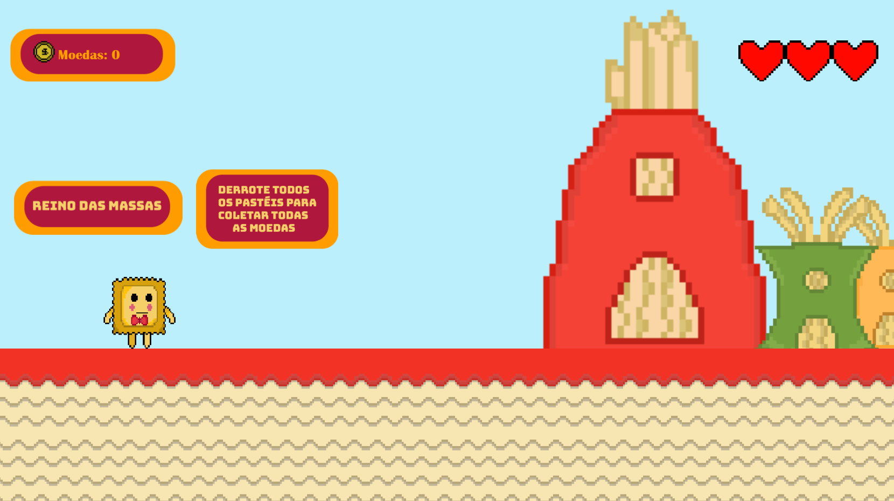
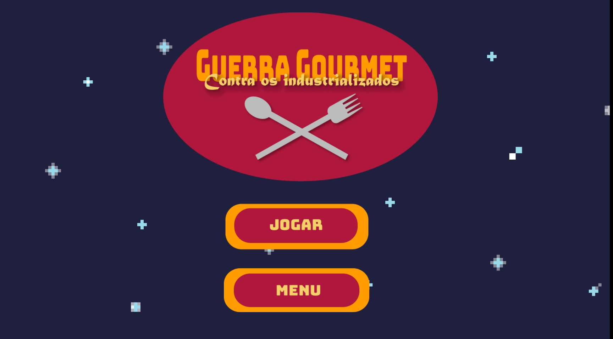
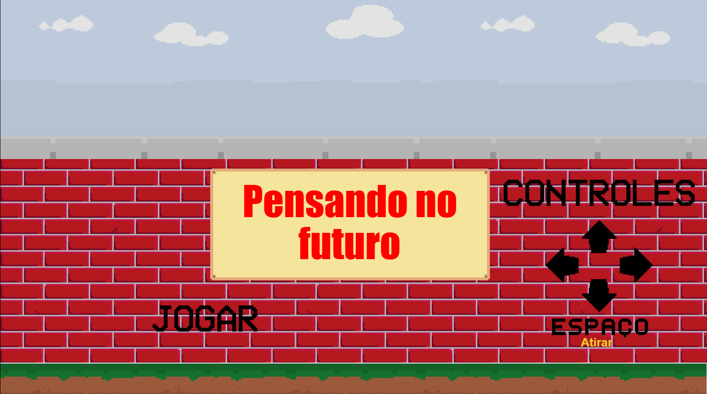
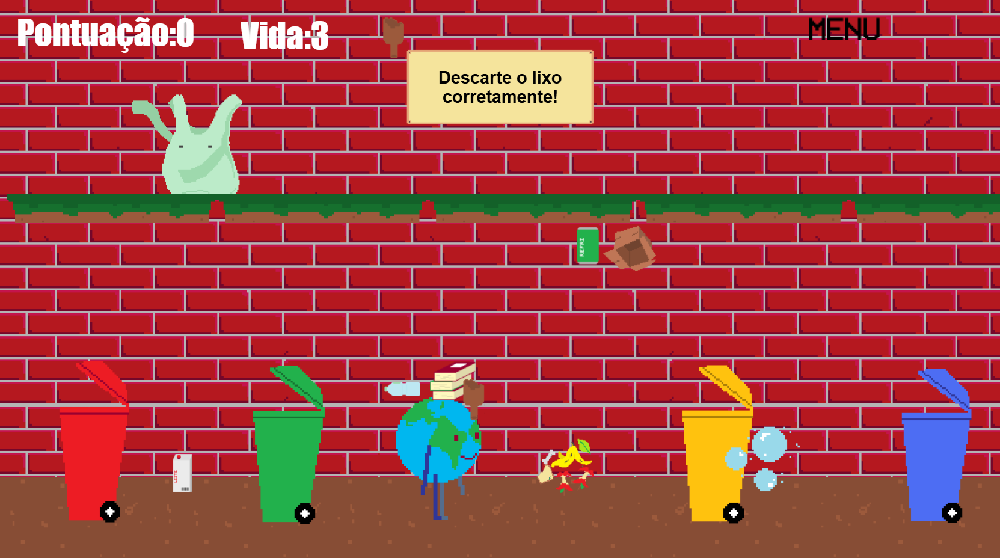

Projeto Integrador
Este webgame é o meu projeto integrador. Como todo trabalho que desenvolvemos no curso ele tem início, meio e fim. Passamos por várias etapas e aprendemos vários conhecimentos, não só nessa qualificação, mas todas as outras fazem parte do processo para chegar até aqui.
GUERRA GOURMET: CONTRA OS INDUSTRIALIZADOS


Para acessar o jogo e jogar clique no link abaixo:
Acesse o jogo com este link: GUERRA GOURMET
História - GUERRA GOURMET: CONTRA OS INDUSTRIALIZADOS
Em um mundo onde quase todos os alimentos já foram contaminados por Trufa Negra, Ravi, um ravioli corajoso terá que passar por mundos perigosos recheados de queijo, massas, tempero e muitas aventuras! Acompanhe Ravi nesta aventura para derrotar Trufa Negra!
Pensando no Futuro
Nesse jogo você vai aprender a descartar cada lixo no seu devido lugar e o que fazer com o óleo usado.


Para acessar o jogo e jogar clique no link abaixo:
Acesse o jogo com este link: Pensando-no-Futuro